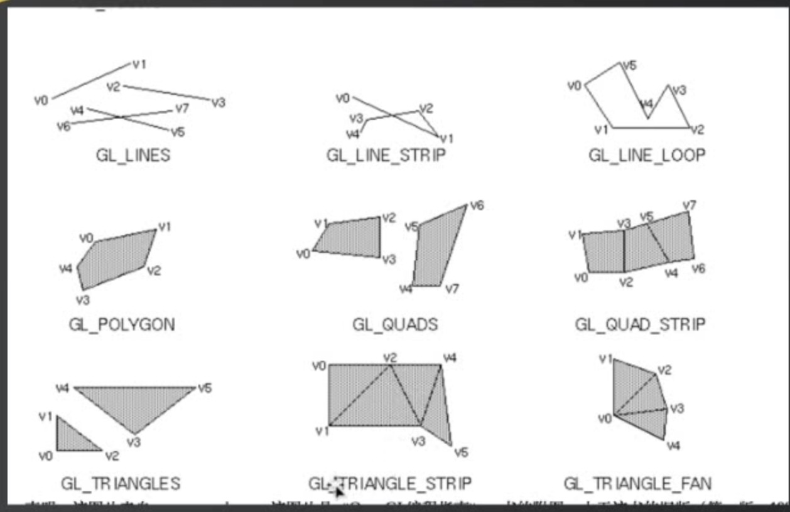

OpenGL简单介绍及实践
什么是OpenGL (Open Graphics Library)
OpenGL 是一种应用程序编程接口（Application Programming Interface,API）,
用于渲染2D、3D矢量图形。
相关程序库
OpenGL被设计为只有输出的，所以它只提供渲染功能。核心API没有窗口系统、音频、打印、键盘／鼠标或其他输入设备的概念。
几个库创建在OpenGL之上，提供了OpenGL本身没有的功能:
- GLU
- GLUT
(能够以可移植的方式提供基本的窗口功能) - GLUI
- GLEW
(GLEW可以简化获取函数地址的过程，并且包含了可以跨平台使用的其他一些OpenGL编程方法) - GLEE
- FREEGLUT
（GLUT已经于1998年不再更新了。于是就有了freeglut） - OpenGL Performer
(可以创建实时可视化仿真程序) - ......
当开发者需要使用最新的OpenGL扩展时，他们往往需要使用GLEW库或者是GLEE库提供的功能，可以在程序的运行期判断当前硬件是否支持相关的扩展，防止程序崩溃甚至造成硬件损坏。这类库利用动态加载技术（dlsym、GetProcAddress等函数）搜索各种扩展的信息。
实践
- GLUT 库使用
int main(int argc,char *argv[]) {
//1. 初始化一个GLUT库
glutInit(&argc, (char **)argv);
//2. 创建一个窗口并定制窗口名
glutCreateWindow("OpenGL_Demo");
//3. 注册一个绘图函数，操作系统在必要的时刻就会对窗体进行重绘制操作
//它设置了一个现实回调（display callback）,即GLUT没在每次更新窗口内容时会自动调用改例程
glutDisplayFunc(RenderScene);
//这是一个无限执行的循环，它会负责一直处理窗口和操作系统的用户输入等操作。（
//注意：不会执 行在glutMainLoop()之后的所有命令。）
glutMainLoop();
}
- GLEW 库使用
可在程序运行操作前进行使用，确保驱动程序的初始化过程中没有任何问题
/*
初始化一个GLEW库,确保OpenGL API对程序完全可用。
在试图做任何渲染之前，要检查确定驱动程序的初始化过程中没有任何问题
*/
GLenum status = glewInit();
if (GLEW_OK != status) {
printf("GLEW Error:%s\n",glewGetErrorString(status));
return 1;
}
- 详细过程
int main(int argc,char *argv[])
{
gltSetWorkingDirectory(argv[0]);//设置当前工作目录，针对MAC OS X
glutInit(&argc, argv); //初始化一个GLUT库
glutInitDisplayMode(GLUT_DOUBLE|GLUT_RGBA|GLUT_DEPTH|GLUT_STENCIL);//显示类型模式
glutInitWindowSize(800, 600); //GLUT窗口大小、窗口标题
glutCreateWindow("OpenGL_Demo");//创建一个窗口并定制窗口名
glutReshapeFunc(changeSize); //改变窗口大小
glutDisplayFunc(RenderScene); //绘图函数
glutSpecialFunc(SpeacialKeys); //键盘操作
//初始化一个GLEW库,确保OpenGL API对程序完全可用
GLenum status = glewInit();
if (GLEW_OK != status) {
printf("GLEW Error:%s\n",glewGetErrorString(status));
return 1;
}
setupRC();//设置我们的渲染环境
glutMainLoop();//这是一个无限执行的循环,相当于RunLoop
return 0;
}
/*
在窗口大小改变时，接收新的宽度&高度。
*/
void changeSize(int w,int h)
{
/*
x,y 参数代表窗口中视图的左下角坐标，而宽度、高度是像素为表示，通常x,y 都是为0
*/
glViewport(0, 0, w, h);
}
/*
绘制界面
*/
void RenderScene(void)
{
//清除一个或者一组特定的缓存区
glClear(GL_COLOR_BUFFER_BIT | GL_DEPTH_BUFFER_BIT|GL_STENCIL_BUFFER_BIT);
//2.设置一组浮点数来表示红色
GLfloat vRed[] = {1.0,0.0,0.0,1.0f};
//单元着色器(类型，颜色)
//shaderManager.UseStockShader(GLT_SHADER_IDENTITY,vRed);
//提交着色器
triangleBatch.Draw();
//将后台缓冲区进行渲染，然后结束后交换给前台
glutSwapBuffers();
}
/*
移动图形 -- 修改图形坐标！
*/
void SpeacialKeys(int key,int x,int y) {
// ...
glutPostRedisplay();//重新绘制
}
/*
设置我们的渲染环境
*/
void setupRC()
{
//设置清屏颜色（背景颜色）
glClearColor(0.2f, 0.40f, 0.7f, 1);
//初始化一个渲染管理器,没有着色器，在OpenGL 核心框架中是无法进行任何渲染的。
shaderManager.InitializeStockShaders();
//指定顶点
//矩形
GLfloat blockSize = 0.1f;
GLfloat vVerts[] = {
-blockSize,-blockSize,0.0f,
blockSize,-blockSize,0.0f,
blockSize,blockSize,0.0f,
-blockSize,blockSize,0.0f
};
triangleBatch.Begin(GL_TRIANGLE_FAN, 4);
triangleBatch.CopyVertexData3f(vVerts);//复制顶点数据到批处理中
triangleBatch.End();
}
附
/*
GLUT_RGBA:RGBA颜色值模式
GLUT_DOUBLE:双缓存窗口
GLUT_DEPTH：
GLUT_STENCIL：
*/
glutInitDisplayMode(GLUT_DOUBLE|GLUT_RGBA|GLUT_DEPTH|GLUT_STENCIL);
/* 清除一个或者一组特定的缓存区
缓冲区是一块存在图像信息的储存空间，红色、绿色、蓝色和alpha分量通常一起分量通常一起作为颜色缓存区或像素缓存区引用。
OpenGL 中不止一种缓冲区（颜色缓存区、深度缓存区和模板缓存区）
清除缓存区对数值进行预置
参数：指定将要清除的缓存的
GL_COLOR_BUFFER_BIT :指示当前激活的用来进行颜色写入缓冲区
GL_DEPTH_BUFFER_BIT :指示深度缓存区
GL_STENCIL_BUFFER_BIT:指示模板缓冲区
*/
glClear(GL_COLOR_BUFFER_BIT | GL_DEPTH_BUFFER_BIT|GL_STENCIL_BUFFER_BIT);
/* 平面着色器
0.传递到存储着色器，即GLT_SHADER_IDENTITY着色器，
这个着色器只是使用指定颜色以默认笛卡尔坐标第在屏幕上渲染几何图形
1.平移矩阵 mTransformMatrix 与 每个顶点 相乘 -> 新顶点 （顶点着色器）
2.将片元着色红色 (片元着色器)
*/
shaderManager.UseStockShader(GLT_SHADER_IDENTITY,vRed);
//单元着色器(类型，颜色)---第一种方法用到的
shaderManager.UseStockShader(GLT_SHADER_IDENTITY,vRed);
//在开始的设置openGL 窗口的时候，我们指定要一个双缓冲区的渲染环境。
//这就意味着将在后台缓冲区进行渲染，渲染结束后交换给前台。
//这种方式可以防止观察者看到可能伴随着动画帧与动画帧之间的闪烁的渲染过程。
//缓冲区交换平台将以平台特定的方式进行。
//将后台缓冲区进行渲染，然后结束后交换给前台
glutSwapBuffers();
